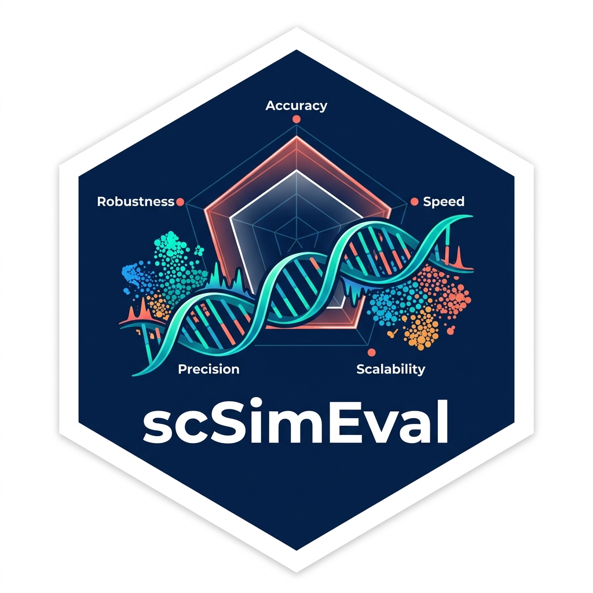

Evaluate Chromatin Accessibility Profile Concordance (DiTSim)
Source:R/07_multiomics_coupling.R
calc_accessibility_profile_concordance.RdComputes global and cell-type-stratified Pearson and Spearman correlations and Kullback-Leibler (KL) divergence between empirical reference and simulated single-cell chromatin accessibility profiles.
Usage
calc_accessibility_profile_concordance(
ref_data,
sim_data,
cell_types = NULL,
use_tfidf = TRUE
)Arguments
- ref_data
Reference count/accessibility matrix (peaks x cells).
- sim_data
Simulated count/accessibility matrix (peaks x cells).
- cell_types
Optional factor or vector of cell-type annotations for cells.
- use_tfidf
Logical, whether to apply TF-IDF transformation prior to mean profile calculation (default TRUE).